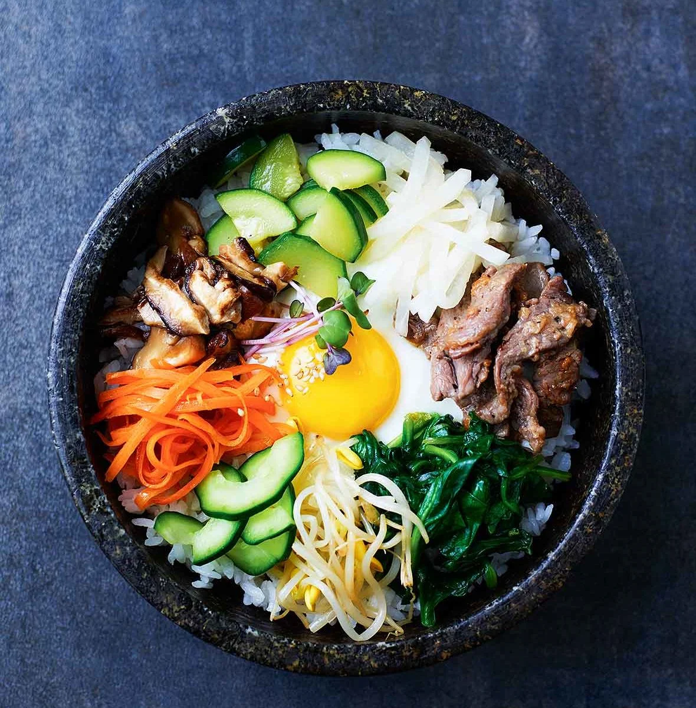

Bibimbap

Description
Bibimbap simply translates to “mixed rice with meat and assorted vegetables“.
You can make endless variations to this dish depending on your preference and
dietary requirements (e.g. microgreens bibimbap) and also based on the dish/bowl
it is served in (e.g. dolsot bibimbap and yangpun bibimbap).
Ingredients
Meat and Meat Sauce
- 100g / 3.5 ounces beef mince (or other cuts)
- 1 Tbsp soy sauce
- 1 Tbsp sesame oil
- 1 tsp brown sugar
- 1/4 tsp minced garlic
Vegetable & Others
- 250g (0.6 pounds) seasoned spinach
- 350g (0.8 pounds) seasoned bean sprouts
- 100g (3.5 ounces) shiitake mushroom
- 120g (4.2 ounces) carrots (1 small)
- 1/2 tsp fine sea salt (1/4 tsp each will be used when cooking shiitake mushroom and carrots)
- 3 to 4 serving portions of steamed rice
- 3 or 4 eggs (depending on the serving portion)
- Cooking oil
- Some toasted seasoned seaweed, shredded (long thin cut)
Bibimbap Sauce
- 2 Tbsp gochujang
- 1 Tbsp sesame oil
- 1 Tbsp sugar
- 1 Tbsp water
- 1 Tbsp roasted sesame seeds
- 1 tsp vinegar
- 1 tsp minced garlic
Steps
- Prepare and cook ingredients as below.
- For meat, mix the beef mince with the meat sauce listed above.
Marinate the meat for about 30 mins while you are working on other
ingredients to enhance the flavour. Add some cooking oil into a wok
and cook the meat on medium high to high heat. It takes about 3 to 5 mins
to thoroughly cook it.
- Mix the bibimbap sauce ingredients in a bowl.
- Cook spinach and bean sprouts.
- Rinse, peel and julienne the carrots. Add some cooking oil and 1/4 tsp of
fine sea salt in a wok and cook the carrots on medium high to high heat for 2 to 3 mins.
- Clean/rinse the shiitake mushrooms and thinly slice them. Add some cooking oil and 1/4 tsp of
fine sea salt in a wok and cook the mushrooms on medium high to high heat until they are all cooked.
(It takes 2 to 3 mins.)
- Make fried eggs. (While sunny side up is common, you can make them per your preference.)
- Put the rice into a bowl and add the meat, assorted vegetables, seasoned seaweed, bibimbap sauce,
and the egg on top of the rice. Serve.
- To eat, mix the ingredients in the bowl, and enjoy!
Back to main page